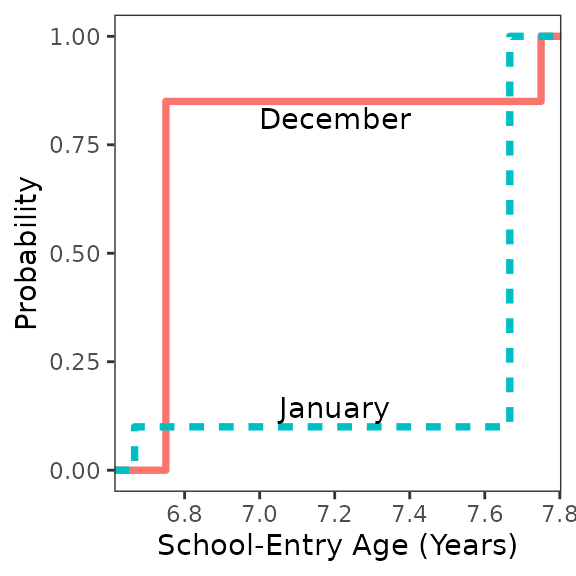
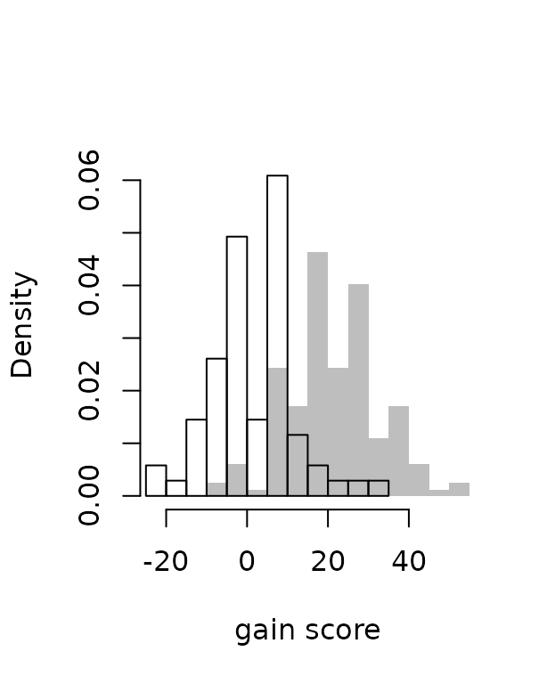
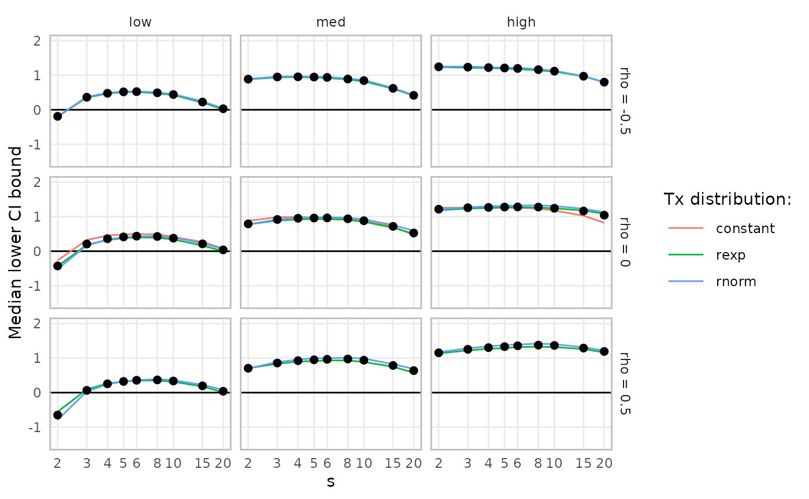
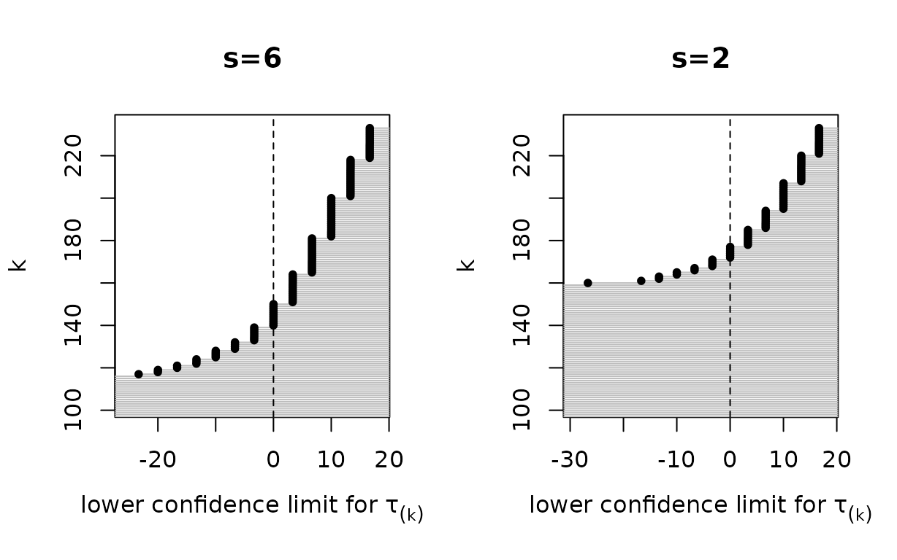

Data analysis and power analysis using RIQITE
Source:vignettes/RIQITE-illustration.Rmd
RIQITE-illustration.RmdThis vignette illustrates using the RIQITE package by implementing
the analyses shown in the main paper (Li and Miratrix). It mirrors
demo_code/RIllustration20221028.Rmd, adapted to build as a
package vignette: the illustrative instrumental-variable dataset ships
with the package as birth_school_age rather than being
hand-rolled inline, setwd() and save.image()
calls have been removed, and a few simulation sizes have been reduced so
the vignette builds in a reasonable amount of time (the main paper uses
larger permutation and simulation counts for publication-quality
precision).
Testing monotonicity of an instrumental variable
We use birth_school_age, data constructed to match the
summary statistics reported in Black et al. (2011) – Table 1
cross-tabulates month of birth and school entry age
(early/on-time/late), and Table 3 reports the total number of subjects
born in January or December (the “discontinuity subsample”): 104,023,
rounded here to 104,000, split evenly between the two birth months
following Fiorini and Stevens (2014). See ?birth_school_age
for details; this is a reconstruction from published aggregate
proportions, not a set of real individual records.
data(birth_school_age)
dat <- birth_school_age
table(dat$BirthMonth, dat$EntryTiming)
#>
#> Early Late On-Time
#> Dec 0 7800 44200
#> Jan 5200 0 46800The following figure shows the empirical distribution functions of the school-entry age of December-born and January-born subjects. From the figure, most children started school at an older age if they were born in January rather than December.
ggplot(dat, aes(EntryAge, color = BirthMonth, linetype = BirthMonth)) +
stat_ecdf(geom = "step", show.legend = FALSE, linewidth = 1.3) +
annotate("text", x = c(7.2, 7.2), y = c(.145, .81),
label = c("January", "December")) +
scale_x_continuous(breaks = seq(6, 8, .2)) +
theme_bw() +
theme(plot.background = element_blank(),
panel.grid.major = element_blank(),
panel.grid.minor = element_blank(),
plot.title = element_text(hjust = .5)) +
labs(x = "School-Entry Age (Years)", y = "Probability")
We first perform the standard regression analysis assessing the relation between the instrument (birthday) and the school-entry age.
lm.fit <- lm(EntryAge ~ (BirthMonth == "Dec"), dat)
cat(paste(
"estimated average effect is", round(as.numeric(lm.fit$coefficients[2]), digits = 3),
"and F statistic is", round(as.numeric(summary(lm.fit)$fstatistic[1]), digits = 0),
"\n"
))
#> estimated average effect is -0.667 and F statistic is 106256This would conventionally be considered persuasive evidence of a valid instrument. We then perform the randomization test for the bounded null on the monotonicity of the instrument: the difference-in-means statistic, the Wilcoxon rank sum statistic, and the Stephenson rank sum statistic with parameter , along with the classical Student’s -test, producing Table 1 in the paper.
dat$Z = as.numeric(dat$BirthMonth == "Dec")
dat$Y = dat$EntryAge
n <- length(dat$Z)
m <- sum(dat$Z)
# NOTE: the main paper uses nperm = 10^4; reduced here so the permutation
# matrix (n x nperm) stays small enough to build quickly and with modest
# memory in a vignette.
nperm <- 10^3
Z.perm <- assign_CRE(n, m, nperm)
# difference-in-means
pval.dim <- pval_bound(Z = dat$Z, Y = dat$Y, c = 0, method.list = list(name = "DIM"),
alternative = "greater", Z.perm = Z.perm, impute = "control")
ci.dim <- ci_bound(Z = dat$Z, Y = dat$Y, alternative = "greater", method.list = list(name = "DIM"),
Z.perm = Z.perm, impute = "control", alpha = 0.10)
# Wilcoxon rank sum (Stephenson with s = 2)
pval.wilc <- pval_quantile(Z = dat$Z, Y = dat$Y, k = n, c = 0, alternative = "greater",
method.list = list(name = "Stephenson", s = 2), Z.perm = Z.perm)
ci.wilc <- ci_quantile(Z = dat$Z, Y = dat$Y, k.vec = n, alternative = "greater",
method.list = list(name = "Stephenson", s = 2), Z.perm = Z.perm, alpha = 0.10)
# Stephenson rank sum, s = 10
pval.steph10 <- pval_quantile(Z = dat$Z, Y = dat$Y, k = n, c = 0, alternative = "greater",
method.list = list(name = "Stephenson", s = 10), Z.perm = Z.perm)
ci.steph10 <- ci_quantile(Z = dat$Z, Y = dat$Y, k.vec = n, alternative = "greater",
method.list = list(name = "Stephenson", s = 10), Z.perm = Z.perm, alpha = 0.10)
# classical Student's t-test
ttest = t.test(dat$Y[dat$Z == 1], dat$Y[dat$Z == 0], alternative = "greater")
pval.ttest = ttest$p.value
ci.ttest = round(ttest$conf.int[1], digits = 3)
result = data.frame(test = c("diff-in-means", "Wilcoxon", "Stephenson 10", "t test"),
pval = c(pval.dim, pval.wilc, pval.steph10, pval.ttest),
lower = c(ci.dim, ci.wilc$lower, ci.steph10$lower, ci.ttest))
knitr::kable(result)| test | pval | lower |
|---|---|---|
| diff-in-means | 1 | -0.669 |
| Wilcoxon | 1 | -0.916 |
| Stephenson 10 | 0 | 0.084 |
| t test | 1 | -0.670 |
Finally, we infer the effect range. The range of the effect of birth month on school-entry age is at least a year, indicating significant individual effect heterogeneity.
tau.max.lower = ci_quantile(Z = dat$Z, Y = dat$Y, k.vec = n, alternative = "greater",
method.list = list(name = "Stephenson", s = 10), Z.perm = Z.perm, alpha = 0.05)$lower
tau.min.upper = ci_quantile(Z = dat$Z, Y = dat$Y, k.vec = 1, alternative = "less",
method.list = list(name = "Stephenson", s = 10), Z.perm = Z.perm, alpha = 0.05)$upper
print(paste("lower confidence limit for effect range is",
max(0, tau.max.lower - tau.min.upper)))
#> [1] "lower confidence limit for effect range is 1.001"Evaluating the effectiveness of professional development
We next evaluate a teacher professional development RCT where treated teachers were given a professional development course on electric circuits, from Heller et al. (2012). The cleaned data ships with the package.
data(electric_teachers)
mod <- lm(gain ~ TxAny, data = electric_teachers)
est_ATE <- round(mod$coefficients[2], digits = 2)
est_ATE
#> TxAny
#> 19.77
hist(electric_teachers$gain[electric_teachers$TxAny == 1],
xlim = range(electric_teachers$gain), freq = FALSE, ylim = c(0, 0.065),
col = "grey", border = FALSE, breaks = 20,
main = NULL, xlab = "gain score")
hist(electric_teachers$gain[electric_teachers$TxAny == 0],
freq = FALSE, add = TRUE, breaks = 20, col = NULL)
We standardize gain by the control-side variation in outcome at baseline, to compare treatment and control variation in effect size units:
sd_0 = sd(electric_teachers$Per.1[electric_teachers$TxAny == 0])
electric_teachers$std_gain = electric_teachers$gain / sd_0
electric_teachers %>% group_by(TxAny) %>%
summarise(raw_mean = mean(gain),
mean = mean(std_gain),
var = var(std_gain),
max = max(std_gain),
min = min(std_gain),
raw_sd = sd(gain),
sd = sd(std_gain))
#> # A tibble: 2 × 8
#> TxAny raw_mean mean var max min raw_sd sd
#> <dbl> <dbl> <dbl> <dbl> <dbl> <dbl> <dbl> <dbl>
#> 1 0 2.46 0.189 0.650 2.55 -1.79 10.5 0.806
#> 2 1 22.2 1.70 0.726 4.08 -0.510 11.1 0.852If there were no correlation between and , the standard deviation of the treatment impacts would be, using , around in effect size units (the group standard deviations above are approximately 0.852 and 0.806):
tx_het <- sqrt(0.852^2 - 0.806^2)
tx_het
#> [1] 0.2761666Determining an s-value for the test statistic
We plan on using a Stephenson’s Rank Sum test, but need to determine an appropriate value of . We first conduct a sensitivity analysis across a range of scenarios to determine which have the highest amount of power for the top 10 quantiles, the next 20 quantiles, and the next 40 quantiles.
To illustrate this process, we first run a check on what the best is for a single scenario, using the empirical distribution of control outcomes and a normally-distributed, uncorrelated treatment effect (in standardized units).
set.seed(303020)
cdat = filter(electric_teachers, TxAny == 0)
ate = est_ATE / sd_0
# NOTE: the main paper uses R = 1000 replicates; reduced here to keep the
# vignette build time reasonable. Increase R for publication-quality
# precision.
R = 50
nperm = 10^3
s_list = c(2, 3, 4, 5, 6, 8, 10, 15, 20)
res <- explore_stephenson_s(s = s_list,
n = nrow(electric_teachers),
Y0_distribution = cdat$std_gain,
tx_function = "rnorm", ATE = ate,
tx_scale = tx_het, rho = 0,
nperm = nperm,
R = R, calc_ICC = FALSE,
targeted_power = FALSE, k.vec = (233 - 99):233)We get one row per targeted quantile and explored , telling us how easy it was to detect effects at that quantile. Here is our performance on the 170th largest effect (of 233 effects):
filter(res, k == 170)
#> # A tibble: 9 × 6
#> # Groups: s [9]
#> s k power SEpower q_ci n
#> <dbl> <dbl> <dbl> <dbl> <dbl> <dbl>
#> 1 2 170 0 0 -Inf 39.8
#> 2 3 170 0 0 -1.27 50.3
#> 3 4 170 0.02 0.02 -0.393 56.5
#> 4 5 170 0.14 0.0748 -0.186 59.0
#> 5 6 170 0.42 0.0917 -0.0669 61.2
#> 6 8 170 0.3 0.110 -0.0741 61.0
#> 7 10 170 0.3 0.0707 -0.152 59.1
#> 8 15 170 0.16 0.0812 -0.316 49.9
#> 9 20 170 0.02 0.02 -0.426 42.5We next make a grid of different scenarios to explore to see if our
trends of best
are consistent across different possible scenarios. This is the same
grid of scenarios used in the paper; the simulation results are shipped
alongside this vignette (heller_s_check_results.rds) so the
vignette does not need to re-run the full multi-scenario simulation
(which is considerably more expensive than the single-scenario check
above) every time it is built.
checks = expand_grid(TxVar = c(0.25, 0.75),
tx_dist = c("rexp", "rnorm"),
rho = c(-0.5, 0, 0.5))
# There is no treatment variation, nor correlation with Y0, when
# the tx impact is a constant.
checks = bind_rows(checks,
tibble(TxVar = 0, tx_dist = "constant", rho = 0))We aggregate our findings and see what provides the tightest confidence intervals across a range of quantile groups: the top 10, next 20, next 30, and next 40. For each group, we take the median of the median lower confidence bound. High points on the curve below indicate those that are more informative:
n_units = nrow(electric_teachers)
s_selector = mutate(s_selector,
group = cut(k,
breaks = c(0, 233 - 60, 233 - 30, 233 - 10, 233),
labels = c("v low", "low", "med", "high")))
s_selector$rho.f = factor(s_selector$rho,
levels = c(-0.5, 0, 0.5),
labels = c("rho = -0.5", "rho = 0", "rho = 0.5"))
avg = s_selector %>%
group_by(s, group, rho, rho.f) %>%
summarise(q_ci = median(q_ci), n = n(), .groups = "drop") %>%
filter(group != "v low")
s_agg = s_selector %>%
group_by(s, group, rho, rho.f, tx_dist) %>%
summarise(q_ci = median(q_ci), .groups = "drop")
s_agg %>%
filter(group != "v low") %>%
ggplot(aes(s, q_ci)) +
facet_grid(rho.f ~ group) +
geom_hline(yintercept = 0) +
geom_line(aes(col = tx_dist), linewidth = 0.5) +
labs(x = "s", y = "Median lower CI bound", col = "Tx distribution:") +
scale_x_log10(breaks = unique(s_selector$s)) +
theme_minimal() +
theme(panel.grid.minor = element_blank()) +
geom_point(data = avg, col = "black", size = 2) +
coord_cartesian(ylim = c(-1.5, 2)) +
theme(legend.key.width = unit(1, "cm"),
panel.border = element_rect(colour = "grey", fill = NA, linewidth = 1))
We can also tally up the winning across each of the 100 quantiles we are exploring:
qis <- s_selector %>%
group_by(TxVar, tx_dist, rho, group, k) %>%
filter(q_ci == max(q_ci))
table(group = qis$group, s = qis$s, rho = qis$rho)
#> , , rho = -0.5
#>
#> s
#> group 2 3 4 5 6 8 10 15 20
#> v low 0 0 0 0 1 39 57 31 32
#> low 0 0 6 36 66 12 0 0 0
#> med 1 30 39 10 0 0 0 0 0
#> high 27 13 0 0 0 0 0 0 0
#>
#> , , rho = 0
#>
#> s
#> group 2 3 4 5 6 8 10 15 20
#> v low 0 0 0 0 0 43 63 51 43
#> low 0 0 0 15 66 68 1 0 0
#> med 0 0 11 48 17 24 0 0 0
#> high 0 6 5 17 1 13 3 5 0
#>
#> , , rho = 0.5
#>
#> s
#> group 2 3 4 5 6 8 10 15 20
#> v low 0 0 0 0 0 25 48 48 39
#> low 0 0 0 0 32 87 1 0 0
#> med 0 0 0 7 33 40 0 0 0
#> high 0 0 1 1 12 14 8 3 1Looking across our results, a wide range of could be argued for; small costs us on the lower quantiles, and very large costs us across the simulations. We adjust our to try and optimize multiple goals at once, using, e.g., .
Analyzing the teacher professional development data
With our selected in hand, we first test the bounded null hypothesis that all individual effects are non-positive.
selected_s = 6
nperm = 10^6
n_units = nrow(electric_teachers)
pval.steph <- pval_quantile(Z = electric_teachers$TxAny, Y = electric_teachers$gain,
k = n_units, c = 0, alternative = "greater",
method.list = list(name = "Stephenson", s = selected_s), nperm = nperm)
pval.steph
#> [1] 0We then conduct inference for all quantiles of individual treatment effects, using Stephenson rank statistics with 6 and (i.e., Wilcoxon rank).
ci6 = ci_quantile(Z = electric_teachers$TxAny, Y = electric_teachers$gain, alternative = "greater",
method.list = list(name = "Stephenson", s = selected_s), nperm = nperm, alpha = 0.10)
ci6
#> CI quantile on 233 units with 164 treated:
#> Method: Stephenson-6
#> Alternative: greater with alpha=0.1
#> Quantiles covered from 1 to 233 (233 quantiles)
#> 1e+06 permutations with tolerance of 0.001
summary(ci6, c = c(-0.0001, 0, 6), k = c(140, 141, 145, 146, 164, 165, 233))
#> CI quantile on 233 units with 164 treated:
#> Method: Stephenson-6
#> Alternative: greater with alpha=0.1
#> Quantiles covered from 1 to 233 (233 quantiles)
#> 1e+06 permutations with tolerance of 0.001
#>
#> Quantile 117 and above (50%, or 117 units) have finite lower CIs
#> Finite bounds range from -23.33 to 16.67
#> CI for maximal effect is 16.67 and above.
#>
#> 93 or more units (40%) with effects larger than -1e-04
#> ..quantile 141 and above have lower CI bounds > -1e-04
#> 88 or more units (38%) with effects larger than 0
#> ..quantile 146 and above have lower CI bounds > 0
#> 69 or more units (30%) with effects larger than 6
#> ..quantile 165 and above have lower CI bounds > 6
#>
#>
#> Table: Selected quantile confidence intervals
#>
#> k lower upper
#> ---- ------- ------
#> 140 -0.009 Inf
#> 141 0.000 Inf
#> 145 0.000 Inf
#> 146 0.001 Inf
#> 164 3.341 Inf
#> 165 6.660 Inf
#> 233 16.671 InfComparing to Wilcoxon:
ci2 = ci_quantile(Z = electric_teachers$TxAny, Y = electric_teachers$gain, alternative = "greater",
method.list = list(name = "Stephenson", s = 2), nperm = nperm, alpha = 0.10)
summary(ci2, c = c(0, 6))
#> CI quantile on 233 units with 164 treated:
#> Method: Stephenson-2
#> Alternative: greater with alpha=0.1
#> Quantiles covered from 1 to 233 (233 quantiles)
#> 1e+06 permutations with tolerance of 0.001
#>
#> Quantile 160 and above (69%, or 74 units) have finite lower CIs
#> Finite bounds range from -26.67 to 16.67
#> CI for maximal effect is 16.67 and above.
#>
#> 59 or more units (25%) with effects larger than 0
#> ..quantile 175 and above have lower CI bounds > 0
#> 48 or more units (21%) with effects larger than 6
#> ..quantile 186 and above have lower CI bounds > 6We can also visualize the bounds:
par(mfrow = c(1, 2))
s_title = glue::glue("s={selected_s}")
plot_quantile_CIs(ci6, k_start = 102, main = s_title)
plot_quantile_CIs(ci2, k_start = 102, main = "s=2")
Finally, we infer the effect range by conducting two tests, one for greater and one for less.
tau.max.lower = ci_quantile(Z = electric_teachers$TxAny, Y = electric_teachers$gain, k.vec = n_units,
alternative = "greater", method.list = list(name = "Stephenson", s = selected_s),
nperm = nperm, alpha = 0.05)$lower
tau.min.upper = ci_quantile(Z = electric_teachers$TxAny, Y = electric_teachers$gain, k.vec = 1,
alternative = "less", method.list = list(name = "Stephenson", s = selected_s),
nperm = nperm, alpha = 0.05)$upper
max(0, tau.max.lower - tau.min.upper)
#> [1] 0In this case, we have no evidence of effect heterogeneity (all the effects could be the same).
Evaluating the effects of six-month nutrition therapy
The main paper also analyzes a homefood nutrition-therapy trial
(details at https://clinicaltrials.gov/ct2/show/NCT03995303, data at
https://doi.org/10.7910/DVN/38X3LX) the same way as the
professional-development data above. That trial’s raw data is
third-party and not distributed with this package, so it is not
reproduced in this vignette; see
demo_code/RIllustration20221028.Rmd in the package source
repository for the full analysis, which runs for anyone who downloads
the data from the link above into
demo_code/data_store/.